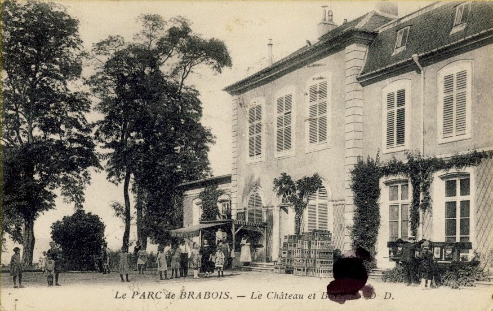

Le château de Brabois
Entrées par le centre équestre à Vandoeuvre, avenue Paul Muller et rue Victor Grignard | Non accessible au public | Latitude : 48.65628620004921 - Longitude : 6.147262505062827
Brabois est une terre défrichée dès le Moyen-Age. Le site devient un fief en 1536 et se composait alors de maisons, granges, et étables. Un pavillon est construit en 1615, agrandi au XVIIIe siècle jusqu’à devenir un vaste château ayant les mêmes proportions que celui de Lunéville et comportant un escalier en vis, de nombreux appartements et une chapelle. Il appartenait à Monsieur Charles-François de Barbarat de Morizot, ministre de Louis XVI.
Il a été démoli peu après la Révolution française, pour être réutilisé en matériaux de construction. Les bâtiments restants ont été vendus à la ville de Nancy en 1921, le principal ayant été transformé pendant quelques temps en restaurant. Il ne reste aujourd’hui que deux bâtiments d’origine, dont un colombier qui a été restauré dans les années 1990. Il subsiste un parc de 60 hectares, avec un panorama extraordinaire sur toute l’agglomération nancéienne.
Carte
Photos

